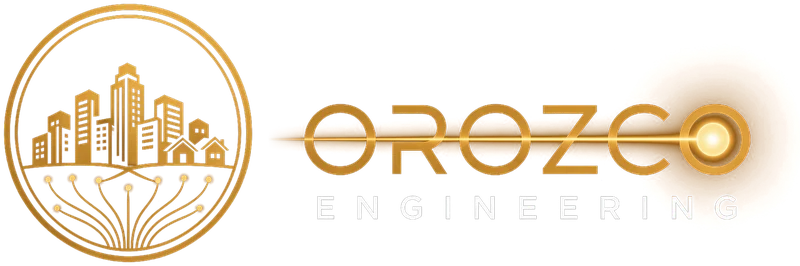

Safety
Designs that respect existing utilities, clearances and traffic control, so crews and the public stay safe.

Fontana, CA · Serving all of the USDesigning the fiber paths that connect our communities.
Orozco Engineering LLC designs the outside plant that brings fiber internet to homes, schools and businesses: aerial and underground fiber routes, make-ready and pole attachment packages, substructure drawings, and the layout and traffic control plans cities, counties and Caltrans need to issue permits. Led by Danny Orozco, with 17+ years of OSP fiber experience including work with AT&T and Cox.
Every fiber connection starts as a design. Before a home gets fast internet, a classroom streams a lesson or a clinic sends a scan, someone has to plan the conduit, the poles and the permits that get the fiber there.
That is our work. Orozco Engineering LLC helps connect homes, schools, hospitals, small businesses and emergency services to fast, reliable fiber broadband. We design the underground and pole infrastructure communities depend on, and we deliver safe, accurate, on-time design and permit packages so builders and cities can move faster.
Every route that gets built is one more neighborhood connected, and one more step toward closing the digital divide.
"I've spent more than 17 years in outside plant fiber. I started Orozco Engineering so every route I design gets built right the first time, and so more families and businesses get the connection they've been waiting for."Danny Orozco, Owner
Designs that respect existing utilities, clearances and traffic control, so crews and the public stay safe.
Every package is checked against records, field conditions and agency standards before it goes out.
You work directly with Danny. Questions get answered and plan check corrections get turned around quickly.
This is infrastructure our neighbors use every day. We treat every route with that in mind.
In plain terms: we plan where the fiber goes, design how it gets there (on poles or underground), prepare the drawings and applications needed to get permission to build, and document what was built. Aerial, underground and buried plant.
F1 feeder and distribution capacity assessments that compare fiber availability against demand, identify shortages and constraints, and deliver reinforcement recommendations before detailed design.
Distribution layouts, terminal placements, cabinet configurations, equipment sizing, fiber assignments, splicing prints and work orders, sized around OLT and PON capacity.
Pole-attachment applications, CAD permit drawings and make-ready documentation for aerial and underground routes, with permit and pathway coordination across cities and utilities.
Network records review to trace existing routes and infrastructure, evaluate fiber availability and find capacity gaps, including Fiber-to-the-Business and customer-driven fiber requests.
Project budgets and cost estimates built from labor, materials and regional construction costs, packaged with the planning documentation Engineering needs to act.
Capacity and constructability reviews of OSP/ISP designs, QA/QC of construction drawings and documents, and as-built documentation.
Design and records work in ArcGIS / GIS mapping, IQGeo, AutoCAD, MicroStation and Bluebeam, delivered as clean, organized packages ready for Engineering handoff.
Added planning and design capacity when your backlog grows: remote nationwide, or on-site for field walkouts and route verification across Southern California and by arrangement elsewhere.
Underground substructure design for new fiber builds, extensions and relocations: conduit and innerduct runs, duct banks, vaults, handholes and pull boxes. Includes route and pathway selection, structure sizing and spacing, conduit fill and cable pulling considerations, bore and trench placement, depth and clearance from existing utilities (based on utility records and USA/DigAlert markings), and joint-trench coordination, delivered as construction-ready plan and profile drawings with quantities and material lists.
Construction layout drawings and traffic control plans (TCPs) for city, county and Caltrans encroachment permits. Layouts show the route, structure locations, bore pits, trench limits, restoration and dimensions from curb and property lines. TCPs cover lane and shoulder closures, sidewalk and bike lane detours, signage and cone tapers based on CA MUTCD standard layouts, and work hours. Includes permit applications, submittals, plan check corrections and resubmittals through approval, so crews can build on schedule.
New fiber routes, extensions and relocations on poles or underground: route selection, cable sizing, splice and terminal locations, slack and storage, splicing prints and work orders, all drawn to the owner's design standards.
Joint use and pole attachment coordination for make-ready, between pole owners, other attachers, utilities and the city so every party knows what moves, who moves it and when.
As-built drawings that match what crews actually installed, redline updates, and CAD drafting support for design and permit sets, so records stay accurate for the next project.
Design and analysis support for new aerial attachments: reviewing existing pole conditions, attachment heights and clearances, and the added load of new fiber, then documenting the make-ready needed for the pole owner's attachment application.
Hands-on management of OSP fiber projects and their permits: reviewing scopes of work, verifying costs, labor and resources, managing schedules and completion dates, tracking permits through approval, and coordinating engineering, construction, utilities and cities to keep work on time and within budget.
We fit in as an extension of your team, on one package or ongoing work.
Planning, design and permit packages that follow your standards and records systems, with capacity when your in-house team is full.
FTTH and business fiber designs, make-ready and permits, so you can get crews in the field and customers connected sooner.
Overflow design, drafting, permitting and QA/QC support when your backlog grows, without adding headcount.
Help planning broadband routes and preparing clear, complete plans that move through review with fewer corrections.
Five steps, the same on every job, so you always know where your project stands.
We review your location, records, standards and deadline, then confirm the scope, deliverables, schedule and rate in writing.
Route, aerial and underground design, make-ready and substructure drawings, built from records, field walkouts and your design rules.
Layouts, TCPs and applications for city, county and Caltrans encroachment permits and pole attachments, followed through corrections to approval.
Every package is checked for capacity, constructability, clearances and agency requirements before it leaves our hands.
Clean PDF and CAD files ready to build or hand to Engineering, plus as-builts after construction when needed.
Turnaround depends on the size of the job and the type of package. We give you a schedule up front, confirm it in writing before work starts, and keep you updated along the way.
Permit approval times are set by each city, county, Caltrans or pole owner. We track every submittal and turn corrections around quickly to keep it moving.
All of the US. Design, drafting and permitting work is done remotely for projects anywhere in the country.
Based in Fontana, with on-site field walkouts and meetings across the Inland Empire and Southern California, and elsewhere in the US by arrangement.
Three representative project types, redacted. Client names are withheld.
For: Tier-1 ILEC
For: Regional fiber provider
For: OSP contractor (for a Tier-1 ILEC)
Provider names indicate past experience only and do not imply a current client relationship or endorsement. Project examples are redacted; client names are withheld.
Built for OSP contractors and engineering firms that need dependable planning and design help without adding headcount.
Every package is planned and reviewed with 17+ years of outside plant fiber planning and design behind it, including work with AT&T and Cox.
Based in Fontana, Orozco Engineering serves all of the US, with on-site walkouts and meetings across Southern California.
Add planning and design capacity when your backlog spikes and scale back when it slows, with no hiring, benefits or overhead on your side.
Send one package first so your team can review the work before committing to more. Rates are quoted per project or hourly.
Owner, Orozco Engineering LLC · OSP Planning Engineer
Danny Orozco is an OSP Planning Engineer and the owner of Orozco Engineering, based in Fontana, California. He brings 17+ years of outside plant fiber engineering, planning, design and project delivery experience, including work with AT&T and Cox, and with firms such as Pearce Services, WYYERD Fiber and CHC Consulting. Danny specializes in F1 feeder-fiber capacity assessment, route tracing and reinforcement planning, along with GPON/FTTX distribution design, permitting and utility coordination, QA/QC and as-built documentation, and leads each Orozco Engineering project directly.
Danny also brings project management experience. As a Project Manager at AT&T, he verified costs, labor and resource allocations, reviewed scopes of work, and managed schedules, completion dates and deliverables for OSP fiber projects. Earlier, as a Project Manager and Design Engineer at CHC Consulting, he designed fiber routes, prepared cost quotes, and coordinated permits and pathway approvals with cities and utilities.
OSP stands for outside plant: the fiber cables, conduit, poles, vaults and handholes outside of buildings that carry a network from the central office or hub to homes and businesses.
All of the US. Design, drafting and permitting are done remotely nationwide. On-site field walkouts are available across the Inland Empire and Southern California, and elsewhere by arrangement.
Yes. We prepare layout drawings, traffic control plans and applications for Caltrans encroachment permits, along with city and county permits, and follow submittals through plan check corrections to approval.
Danny Orozco leads every Orozco Engineering project directly, so you work with the same person from scope through delivery.
Yes. Many clients start with one package so their team can review the work before sending more.
Per project or hourly, quoted after we review the scope. You get the rate and schedule in writing before work starts.
PDF drawing sets and AutoCAD (DWG) files, plus quantities, applications and other documents in the format your team uses. We can work to your title blocks, layers and design standards.
The project location or area, type of work, plant type (aerial, underground or buried), any records or base maps you have, your design standards, and your deadline.
Have an OSP fiber project anywhere in the US? Call or email a short scope and Danny will follow up to talk through the work, schedule and rate. Happy to start with a small job.
Orozco Engineering LLC · Fontana, CA · (909) 695-8326 · danny@orozcoengineering.com